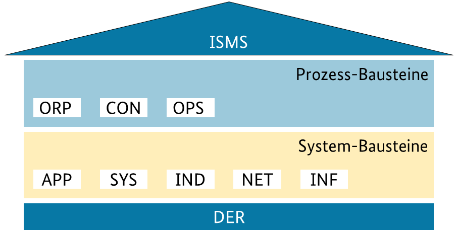

IT-Sicherheit
Die IT-Grundschutzbausteine des Bundesamts für Sicherheit in der Informationstechnik (BSI) bilden einen umfassenden Katalog von Sicherheitsmaßnahmen für verschiedene IT-Umgebungen. In diesem Dokument werden die relevanten Bausteine für einen typischen Arbeitsplatz oder eine HomeOffice-Umgebung identifiziert und analysiert.

Informationssicherheitsmanagement (ISMS) umfasst Planung, Lenkung und Kontrolle eines Prozesses zur Herstellung von Informationssicherheit. Es muss in bestehende Managementstrukturen integriert werden und erfordert organisationsspezifische Anpassungen. Ziel ist ein funktionierendes ISMS, wofür der Baustein systematische Schritte und Anleitungen zur Konzepterstellung bietet.
Der ORP-Baustein legt organisatorische Maßnahmen zur Informationssicherheit fest.
Die CON-Bausteine definieren Konzepte und Vorgehensweisen zur Informationssicherheit in verschiedenen Bereichen.
Die OPS-Bausteine definieren Anforderungen an einen sicheren IT-Betrieb und die organisatorischen Prozesse in Institutionen. Dabei werden drei Bereiche unterschieden:
Dieser Abschnitt behandelt die Identifikation potenzieller Gefährdungen sowie die erforderlichen Maßnahmen zur Absicherung des eigenen IT-Betriebs innerhalb des Unternehmens.
Hier geht es um die Sicherstellung und Überwachung von IT-Dienstleistungen, die von externen Dienstleistern erbracht werden (Outsourcing).
Dieser Abschnitt beschreibt, welche Aspekte zu beachten sind, wenn das eigene Unternehmen IT-Dienstleistungen für externe Kunden erbringt.
IT-Anwendungen sind ein zentraler Bestandteil moderner IT-Infrastrukturen. Sie umfassen Office-Produkte, Webbrowser, mobile Anwendungen und viele weitere Softwarelösungen, die zur Verarbeitung und Verwaltung von Informationen verwendet werden. Aufgrund ihrer Verbreitung und Funktionalität stellen sie ein potenzielles Sicherheitsrisiko dar. Der IT-Grundschutz stellt Anforderungen an die sichere Nutzung und Konfiguration dieser Anwendungen, um Bedrohungen zu minimieren und Datenschutz sowie Informationssicherheit zu gewährleisten.
Der Baustein SYS - IT-Systeme behandelt die Sicherheit verschiedener IT-Komponenten, darunter Server, Desktop- und mobile Endgeräte sowie spezielle Systeme wie Drucker, IoT-Geräte und Wechseldatenträger. Er beschreibt typische Bedrohungen, wie unbefugten Zugriff, Datenverlust und Manipulation, sowie Maßnahmen zur Absicherung, darunter Zugriffskontrollen, Verschlüsselung und regelmäßige Updates. Besondere Schwerpunkte liegen auf der Härtung von Betriebssystemen, Netzwerksicherheit und sicheren Nutzungskonzepten für IT-Geräte. Ziel ist es, die Verfügbarkeit, Vertraulichkeit und Integrität der IT-Infrastruktur zu gewährleisten und Risiken durch organisatorische und technische Schutzmaßnahmen zu minimieren.
Folgende Serverlösungen werden behandelt:
Hier werden Best-Practices für folgende Desktoplösungen beschrieben:
Im mobile Bereich werden folgende Lösungen beschrieben:
Hier werden Lösung für weitere wichtige IT-Komponente beschrieben:
Der Baustein IND - Industrielle IT beschreibt Schutzmaßnahmen für industrielle Steuerungs- und Automatisierungssysteme, Produktionsnetzwerke und kritische Infrastruktur. Er behandelt die Absicherung von Prozessleittechnik (ICS), Speicherprogrammierbaren Steuerungen (SPS), Safety Instrumented Systems (SIS) und industriellen Netzwerken. Wichtige Maßnahmen sind Netzsegmentierung, Zugriffskontrollen, sichere Protokolle sowie regelmäßige Sicherheitsüberprüfungen. Ziel ist es, Manipulationen, unbefugte Zugriffe und Betriebsstörungen zu verhindern, um die Sicherheit und Verfügbarkeit industrieller Prozesse zu gewährleisten.